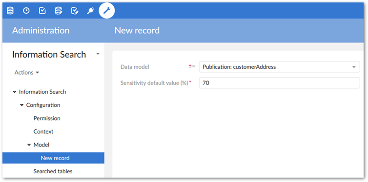
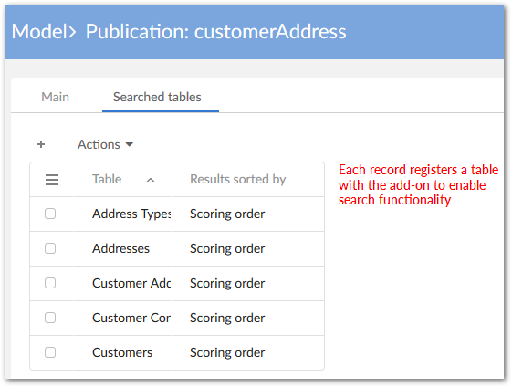

Administrators can configure the add-on to search data local to where the search was executed, or to search data spanning multiple datasets and dataspaces. The following two configuration examples are provided to get you started:
As described below, basic configuration entails:
setting search criteria for, and registering a data model. This includes setting options such as search sensitivity and permissions. The criteria you specify applies to any table included in this data model that users can search.
determining which tables users can search. Because of the model-driven configuration, you only need to setup a table one time. Users can run a search on the table regardless of its dataset location.
indicating the field(s) that the add-on searches when users run queries. This includes specifying the field, and search algorithm applied to queries on this field. Each algorithm processes data differently. The ability to apply algorithms to individual fields, based on that field's data type, helps ensure that searches return the most relevant results.
In addition to the previously mentioned options, you can also:
The sample presented in this section demonstrates a configuration that enables search on a single field in a table. Use the same steps to enable search for multiple tables and fields. If you have questions regarding an option not discussed in the instructions, click the property's tooltip to obtain more information.
To enable EBX® Information Search Add-on:
Navigate to Administration > Data quality & analytics > EBX® Information Search Add-on > Configuration > Model. Create a new record.
Select the data model you want to register. At this stage you can also specify the default search sensitivity that the add-on applies to all tables included in this data model. This value plays an important role in returning the most relevant values. When set too high, potentially correct results may be overlooked. On the other hand, a search may return irrelevant results when the sensitivity is too low. As a recommended practice you can test the setting to ensure the add-on returns the best results (Search sensitivity).

Save, but do not close your configuration.
Specify the table on which you want to enable search by selecting the Searched tables tab and creating a new record.

After adding a table, save, but do not close the record.
Select the Searched fields tab and create a new record to indicate the field you want the add-on to search. Additionally, you can specify the following criteria:
Chose a primary, and optionally, a secondary search algorithm. Depending on the field's data type, you can choose from pre-existing phonetic, or distance based algorithms. Alternatively, you can create your own algorithm. See Working with algorithms for more information.
Use a Java class to filter the search. If you have created any filtered values in the add-on's configuration, use the default class (com.orchestranetworks.addon.tese.SearchValueFilter) to filter out values. Alternatively, you can create and specify your own custom class to filter values. See Excluding values from searches for more information.
Allow the add-on to return synonyms when an exact match is not found. You can limit available synonyms to a single group, or enable multiple groups. See Expanding searches with synonyms for more information.
After saving and closing the field record, you can continue to configure additional fields on this table. When finished, save and close out of the configuration.
Users that can access datasets and tables configured to use the add-on can run the search service from either Actions menu. At any time you can use the Model, Searched tables, Searched fields, and other configuration groups to add, or alter configuration information.
Generally, when you lower the sensitivity, searches return more results. For example, when searching for "Alice" with a setting of 70, a search may return "Alice". After lowering the sensitivity to 60, the search would still include the previous result, but may also include "Aliz" and "Alric".
When enabling global search, you associate a user profile with one, or more contexts that point to tables. When a user profile performs a global search, it will include all tables from the linked contexts. To include a table in a context, register the table's containing model and the table with the add-on, and configure search options for the desired fields. These steps are demonstrated in the Creating a basic configuration heading above. The example below uses previously configured tables.
To enable global search:
Navigate to Administration > Data quality & analytics > EBX® Information Search Add-on > Configuration.
Open the Permission table and create a new record.
Select the desired profile from the drop-down list, then add a context. If no context exists:
Open the Context drop-down and select + Create, or create a new record in the Context table.
Supply a code and optionally a custom title.
Use the Dataspace, Dataset, and Tables fields to include tables in this context. Remember, you can only add tables that have been previously configured in the add-on.
After adding all desired contexts, save and close. The global search icon will now be available for the user, or users included in the role, registered in the Permission table.
To use the global search feature for any dataspace, it must remain enabled in the Reference dataspace permissions.